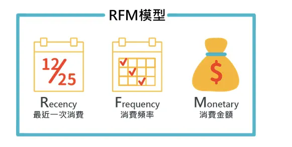
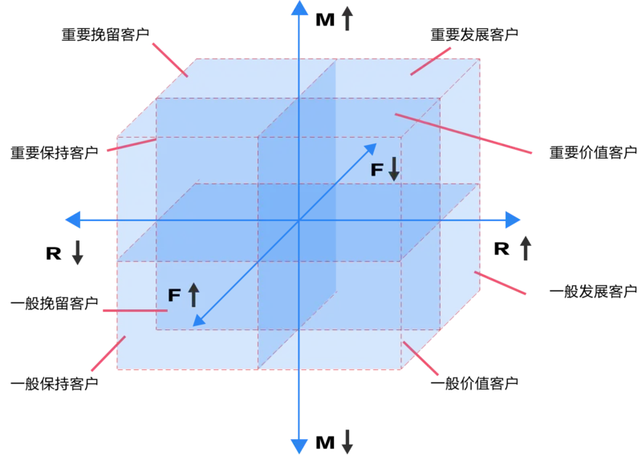
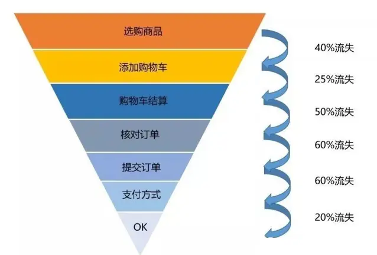

数据模型-业务模型
数据模型-业务模型
数据分析模型一般有两种，业务模型和算法模型。
业务模型是基于业务角度的思考，从业务指标和业务维度出发，协助梳理和构建业务规则的指标体系。这些方法一般是一类思想或者是方法论，辅助业务更好地理解当前业务现状。不同行业领域应用的业务模型会有差异。这里举例几个常见的业务模型。
AARRR模型分析
AAARR（Aquisition,Activation,Retention,Revenue,Referral）模型是互联网领域常用的分析模型，用来分析用户使用路径和用户流量变化的业务模型。模型将用户分成五个方面进行刻画：
用户获取（Aquisition）： 即新客户使用阶段，新客户的获取的方式包含外部广告投放、明星推荐、活动拉新等方式，通常这里需要考虑的信息有新用户注册数量，不同渠道的注册数量和访问数量，不同渠道留存量和用户活跃度
用户激活（Activation）： 即新用户获取后，开始在应用中活跃起来，此时需要考虑用户活跃数量
用户留存（Retention）：即新用户可以持续在应用中使用，其目的是让用户持续在应用中保持活跃。此时可以考虑用户的流失率、用户转化率
用户变现（Revenue）：即利用用户来产生可观的收入，拉新用户使用应用的目的是为了维持用户增长并提高应用的收入来源。此时需要考虑客单价、营业额等相关指标维度
用户推荐（Referra）：即用户自主推荐应用给身边新用户使用，当做传播的一种方式，当用户转发推荐本应用，说明其对本应用有较高的认可。
RFM分析法
RFM（Recency,Frequency,Monetary）分析法用于用户运营中，进行用户精细化划分分类，从而来考虑针对不同的分类用户，来制定不同的运营策略。对应三个单词的主要含义为：
- R（最近一次消费时间间隔）： 即表示最后一次用户付费日期距今的天数，这里如果天数越小，表示用户仍然使用应用，表现出用户对应用有较高的忠诚度；
- F（消费频率）： 统计时会考虑加上一个时间区间，在对应的时间期间内，消费频率越高，说明用户的活跃度高，也代表这段时间用户的应用价值很高
- M（消费金额）： 统计时也会加上一个时间区间，在对应时间区间内，消费金额越高，说明用户的价值很高
RFM分析法，应用的场景广泛，比较常见的是银行和电信公司，针对高F和高M的用户，一般会是企业重点关注的对象，通常也会提供一些特殊的VIP增值服务，用于发展和保持这些客户。
 漏斗分析法
- 漏斗分析法一般应用在互联网领用，用来分析用户在不同的操作阶段，转化率的情况，可以帮助我们科学地评估某种业务从用户使用的起点到终点的整个过程，不同阶段的转化情况，并帮助业务找到有问题的环节。
- 针对漏斗分析的结果，可以针对性地做不同方面的改进和优化，提升某一个环节的转化率，这些优化可能是系统优化、运营策略调整或者业务战略调整等。
- 通常漏斗分析会关注的重要指标有流失率和转化率，这两个指标是互补型的指标。
- 漏斗分析法，可以结合不同的业务领域，考虑不同的阶段做特殊的模型设计，比如AARRR模型和AIDMA模型就是很好的应用。
针对不同的优化策略，参考漏斗分析的参考如下：
系统优化
- 针对用户某个阶段的转化率低，可以考虑是否因为系统设计有缺陷，影响了用户使用和操作体验
- 比如用户录入信息的入口难以找到，可以考虑将入口明显放大，引起用户的关注
运营策略调整
- 针对用户在某些活动中参与率低，可以考虑参与用户低的是否有共同特征或者为一类群体，或者该阶段的投放和吸引策略是否有足够有效
- 如果是某一类群体用户参与程度低，需要考虑针对这类用户做定向分析和运营策略调整
- 如果对应阶段的用户普遍转化率低，可以考虑运营投放的推广范围和活动力度不太明显，是否考虑要改变活动互动策略方式
业务战略调整
如果用户普遍流失严重，受众群体普遍很低，通过系统和运营策略调整都没有很大的改善，可以考虑当前的业务在市场的受众以及市场竞争力还不行
如果有必要，可以考虑调整整个业务战略的方向。

用户画像分析法
- 用户画像是通过针对用户的不同特征，给用户贴上不同标签，并针对不同标签给用户进行分类的方法
- 用户画像分析，作为重要的分析方法，可以辅助产品人员这对产品功能做特定的功能优化和迭代
- 也可以辅助运营人员，针对不同的用户群体进行不同方向的策略运作，提高新用户数的增长
- 用户的标签一般来源于用户注册填写的信息，或者日常用户的业务系统操作行为习惯
用户标签一般会分成四种：
- 基础属性：比如性别、年龄、教育程度、身高、收入、职业等
- 社会关系：比如是否已婚，是否有孩子，父母是否健在等
- 行为特征：比如系统使用时间，最近一次活跃时间，最近一次消费时间，是否和平台有相关绑定关系等
- 业务特征：根据实际业务场景记录的相关业务指标。比如健身类应用会有体脂率、BMI等
用户特征的应用场景有：针对性的广告投放，精准进行活动营销，针对不同用户做个性化内容推荐，进行高风险用户的监测，针对不同用户做产品优化，进行整体数据分析和价值分析等
参考文档：
 微信
微信